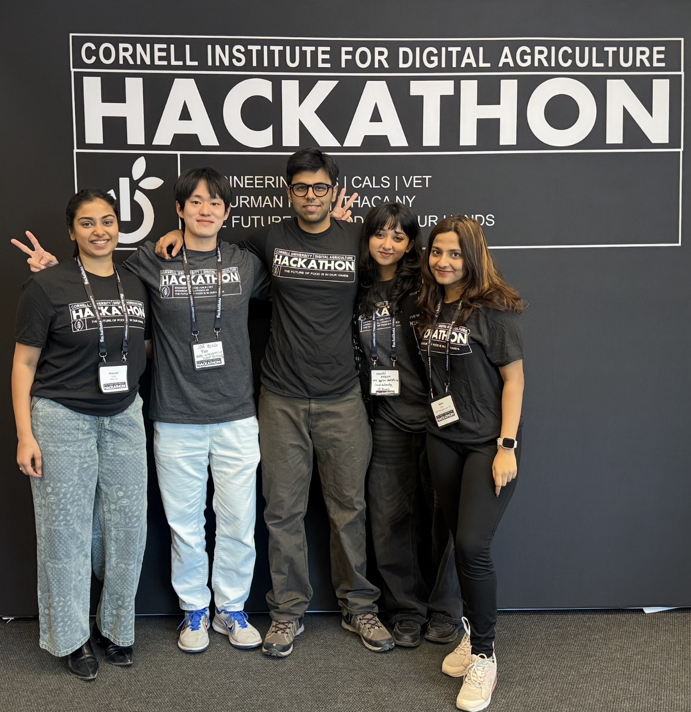

I'm Hansini Rajesh, a Data Science enthusiast with a strong coding foundation and a bias for building solutions that are both technically solid and easy to understand. I'm especially drawn to work in finance and healthcare, but I love exploring different industries because good data thinking transfers everywhere.
I began as a Computer Science major at VIT Chennai, India, where I built a strong base in programming and problem-solving. That technical foundation is still the backbone of how I approach data today.
What pulled me into data science is how universal it is: every industry runs on data. I realized I could combine my love for coding with my curiosity about almost anything - by using data science to explore, predict, and explain what's happening beneath the surface.
A recent turning point for me was a digital agriculture hackathon. I didn't have much background in food science (or hackathons), but our idea needed a prototype web app - and I was able to build a solid version in under 8 hours.
That experience reminded me that I can adapt quickly, build under pressure, and turn messy ideas into working solutions.

I do my best work with clear goals. A little ambiguity can be useful early on, but I prefer knowing what success looks like and building toward it deliberately.
When data is messy, I'm comfortable (happy, even) doing the unglamorous work: cleaning, preprocessing, correcting, scraping and restructuring until it's ready to analyse.
I avoid heavy technical language when possible, use simple framing (and the occasional metaphor), and tailor the message to the audience without dumbing it down.
When priorities change, I like building with flexibility - saving progress in stages so updates don't mean starting over. Iteration over perfection.
At my core, I'm a "data supporter", I find the story behind the numbers, organize it clearly and present it in a way that feels natural, whether through a dashboard or a clean analysis.
I adapt quickly to new domains and tools. Whether it's a hackathon on digital agriculture or a deep dive into financial modeling, curiosity is my edge.
I'm based in Ithaca, NY, open to relocation, and currently seeking full-time roles. If you'd like to collaborate or chat about an opportunity, feel free to reach out - or jump straight to my projects to see what I build.
No matter how ridiculous the odds may seem, within us resides the power to overcome these challenges and achieve something beautiful. And one day.... we'll look back at where we started and be amazed by how far we've come..""
- Technoblade (never dies)